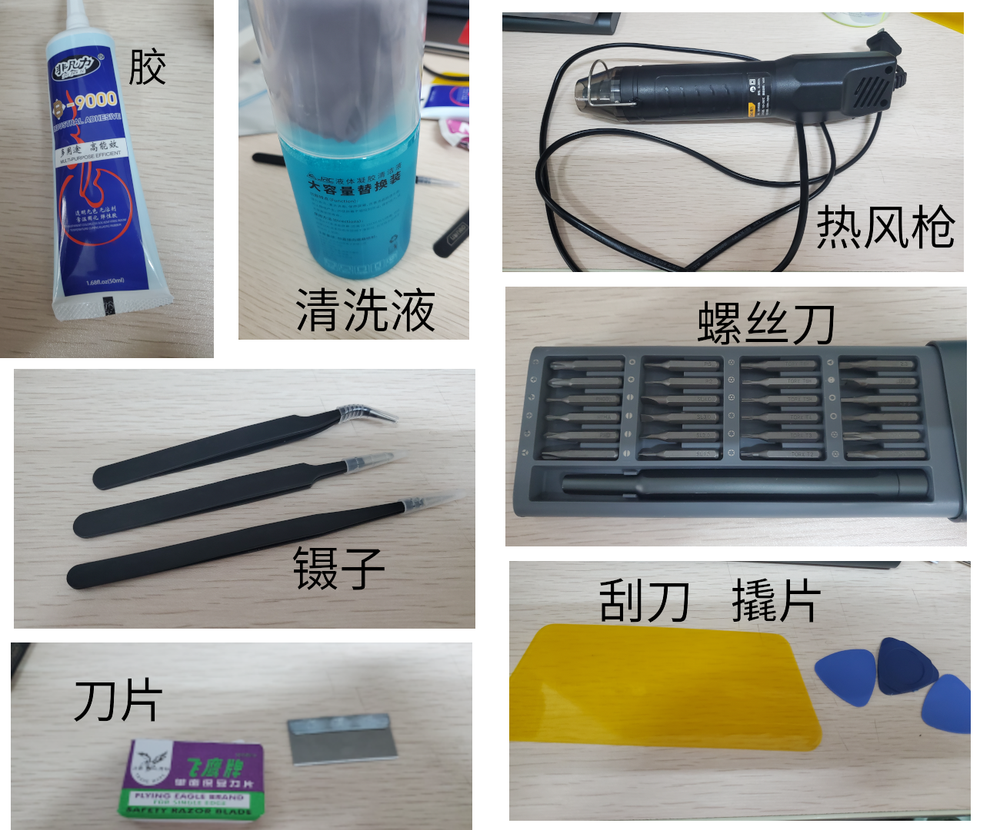
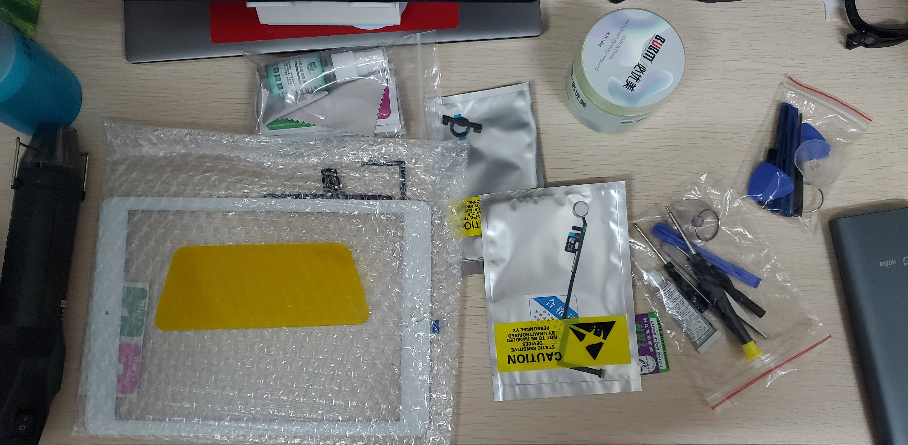
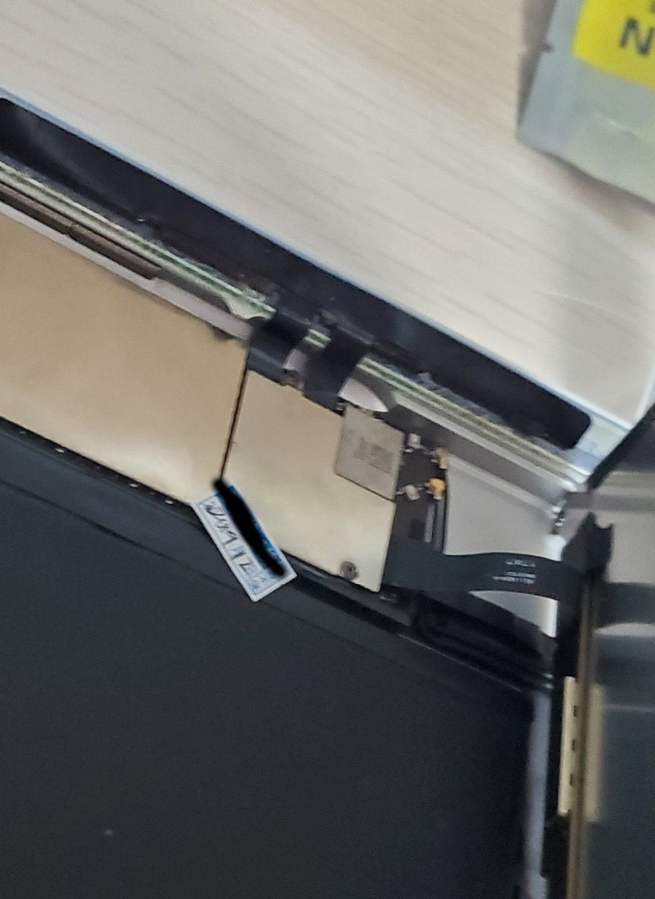

引言
事情发生两次第三方维修失败之后.
2020 年在家度过的那个学期, 把 ipad 的屏幕摔碎了, 如图
file:2021-07-24-thinking-ipad_sereen/intro1.jpg
同年 9 月份开学后, 由于疫情, 校外寄修, 280元修好.
但是过了大约半年后, 又出现了新的问题: home 键无回弹, 屏幕右侧开裂, 进到屏幕里 边一些灰尘.
此时我已经对此 ipad 无爱了, 已经买了 tab s7+ (体验超乎想像, 手写没有滴答滴答的声 音, 也有一定的阻尼, 定价还比同等定位的 ipad pro 便宜特别多).
但是, ipad 也不能扔在那不要了, 还是要修一下. 遂到校内某地下维修店咨询维修. 报价: 清屏内的灰 + 粘缝 150块, 再要同时修好 home 键则要 400块. 我选择了 清屏内的灰 + 粘缝 150块.
至此两次维修已经 430 块了.
但是, 屏幕内的灰并没有清掉, 只是把侧面用胶粘了一下. 而且, 过了一段时间又开开裂了. 屏幕边缘又出现了一条小的裂缝.
经对第三方维修彻底失望了!
自己买了胶, 打算粘一边上的裂缝. 但一不小心, 裂缝又扩到了全屏(裂缝效果如图)

对第三方的维修很失望, 又有些生气! 所以要自己换.
工具及价格
工具非常重要, 工具不全, 很有可能对机器造成二次伤害. 因此我准备了充足的工具. 最终 用到的工具如下图

胶是单独买的, 清洗液, 螺丝刀也是好久之前买的. 刀片和撬片是买屏幕和 home 键送的. 刮 刀是之前买墙纸送的. 所以新买的物品及价格如下表
| 物品 | 价格/元 | ||
| 镊子 | 15 | ||
| 迷你热风枪 | 50 | ||
| 屏幕 | 42 | ||
| 总计 | 107 |
还有买了没用到的...
| 物品 | 价格/元 | ||
| 镊子(购物车里点了两件 ...) | 15 | ||
| home 键(屏幕带有一个, 而且原来的也没坏) | 25 | ||
| 总计 | 40 |
下图是买屏幕和 home 键送的一些工具, 但是没有用到

过程
下面是整个过程记录, 括号中是照片的拍摄时间.
拆
准备开始(11:50)

首先关机.
沿着屏幕没有音量键的一侧(原因是有音量键的一侧有排线)用热风枪吹一下, 用刀 片划出缝隙, 插入撬片, 如下图(12:00)

同样吹一下上下两侧, 撬开(12:02)

撬的过程中又出现了新的裂缝, 但是没关系, 旧屏幕不要了.
撬开三侧的屏幕后, 把剩下的一侧也用热风枪吹一下, 掀开屏幕, 并拧下内屏四个 角上的螺丝(图中红色圈出的) (12:03)

拧下内屏四个角上的螺丝后, 掀开内屏, 注意保护排线, 如下图, (第一次维修的标签还在) (12:06)

拧开三颗螺丝(下图红圈)看见排线(12:11)
file:2021-07-24-thinking-ipad_sereen/disassemble5.jpg
下图中红色圈出三个排线, 都要小心拔下
file:2021-07-24-thinking-ipad_sereen/disassemble6.jpg
用镊子撬起左边两个(12:13)
file:2021-07-24-thinking-ipad_sereen/disassemble7.jpg
右边一个, 揭下上面的一块黑色胶布, 向下图中右侧方向拉出即可 (12:14)
file:2021-07-24-thinking-ipad_sereen/disassemble8.jpg
所有排线都已拆下, 此时内外屏可以一起拿下来了 (12:15)
file:2021-07-24-thinking-ipad_sereen/disassemble9.jpg
所以, 一个像我一样没有任何拆机经验的人, 在准备好工具, 看过一些教程后, 25分钟可以 拆下屏幕. 此过程没有任何难度, 只要注意排线即可.
Home 键
新屏幕上集成一个 home 键, 但是没有指纹功能. 所以要换原来的 home 键.
用热风枪吹一下, 用镊子取下旧屏幕的原装的 home 键 (12:16)
file:2021-07-24-thinking-ipad_sereen/homekey1.jpg
把新屏幕上的也用热风枪吹一下, 用镊子取下. 因为粘的比较 结实, 所以一开始用力大了点, 听到一点响声, 还以为屏幕碎了, 好在不是. 之后拆的就比 较温柔了(12:26)
file:2021-07-24-thinking-ipad_sereen/homekey2.jpg
取下之后, 发现原来的 home 是有回弹的. 但是放进屏幕上的坑里又没有回弹了.
我以为是上面残胶导致没有贴合好, 就用热风枪吹一下, 用镊子取下殘胶 (12:34)
file:2021-07-24-thinking-ipad_sereen/homekey3.jpg
残胶已经取下(12:36)
file:2021-07-24-thinking-ipad_sereen/homekey4.jpg
但是装到坑里还是没有回弹. 我也终于发现了原因!
如下图, 回弹的装置是 B 处的微动开关. 如果 A, C 两处完全没有缝隙地粘合到屏幕上, 就会使 B 处的微动开关一直处于按下状态. 因此 A, C 两处应留有一定的缝隙!
我的处理方法是, 在 C 处的屏幕上滴上几滴胶(A处有残留的双面胶, 就不滴胶了), 然后准 B 处, 使 B 处接触但微动开关处于不按下的状态, 静置, 等胶表面凝固
file:2021-07-24-thinking-ipad_sereen/figure1.jpg
在此附上三个 home 键的对比 (12:37)
file:2021-07-24-thinking-ipad_sereen/homekey5.jpg
可以发现, 原装的和第三方生产的 home 键结构不一样. 第三方的 home 键微动开关是一体 的, 因此比较好安装. 但是第三方的没有指纹功能.
为了保险起见, 在 A处也上了一些胶 (12:47)
file:2021-07-24-thinking-ipad_sereen/homekey6.jpg
清胶
home 键上的胶外表固化需要一些时间. 此时可以清理主机上的殘胶 (不得不说, 这项工作还有 点解压... 将整块的胶撕下...) (12:54)
file:2021-07-24-thinking-ipad_sereen/clean1.jpg
意外地发现, 磁吸就是这几块磁铁的作用 (13:00)
file:2021-07-24-thinking-ipad_sereen/clean2.jpg
四周的残胶全部清理干净! (13:09)
file:2021-07-24-thinking-ipad_sereen/clean3.jpg
装
清完残胶后, 试了一下粘合的 home 键, 但是貌似没有完全干好, 但是也没有关系, 直接安上 吧.
接上新屏幕的排线 (13:17)
file:2021-07-24-thinking-ipad_sereen/assemble1.jpg
稍稍拧上内屏螺丝. 合上屏幕. 过程中发现需要把排线折一下, 才能把屏幕合上. 这样一来 这边的屏幕就会被顶着, 这边容易开胶的原因就在此!
像其它教程中一样, 拖动一个图标四处划一下测试触屏. 顺便还测试了回弹和指纹, 都正常. (13:29)
file:2021-07-24-thinking-ipad_sereen/assemble2.jpg
把内屏的四颗螺丝拧紧. 擦干净内屏. 擦内屏这个活, 我擦了 20 分钟, 但总不能完全擦干 净. 也许没有办法做到完全干净的, 但其实也没有大的影响.
把外屏幕上的双面胶和内部的膜撕掉, 粘结实.
再测试一下, 所有功能都没问题, 完美. 放个视频, 试一下声音也没问题(重影不是屏幕的 原因, 是因为西片受到了惊吓...) (13:50)
file:2021-07-24-thinking-ipad_sereen/assemble3.jpg
完
顺便把送的膜也贴上了! 不太放心有排线的一侧, 然后又上了一下胶, 过后再清掉多余的. 找几本书压一下吧! ^ _ ^ (14:03)
file:2021-07-24-thinking-ipad_sereen/complete1.jpg
总共用时两小时十三分钟. 如果再来一次的话, 大概一个小时即可. 内屏的灰也没了, home 键也有回弹了!
Summary
返厂和第三方的区别
返厂大概要 1000 多, 对于这个 ipad 确实已经不值这个价钱了. 经过这次自己换屏的经历, 我想返厂和第三方如此大的差价的原因是
1. 官方维修工艺有保证, 不会出现后续的 home 键失灵, 翘边, 进灰这一系列的后续 问题, 这真的很影响心情. 2. ipad 受众比较广, 屏幕的市场比较大, 这使得生产成本比较低, 在网上只要三四十块就 可以买到.
如果 ipad 本身有 4000 以上的话, 我觉得花 1000 多官方维修还是值得的! 但我这个只有本 身也只有 2000 多, 就算了.
对第三方维修的感想
我一开始想的是, 不用自己折腾, 省心, 省时间, 多花点钱找人修是不错的! 但是, 维修结 果非常之令人失望, 完全对不起它们的价格!
第一次换屏 280, 如果能够工艺好一些, 之后不出问题, 我觉得是可以接受的, 实际后来出 了问题我觉得也还正常, 毕竟工艺水平有限, 人工劳力成本也很高. 后来裂了, 我不愿意再 去校外找他们售后了, 麻烦, 心累.
令人恼火的是第二次在校内某地下的维修! 只收钱不办事, 还漫天要价!
- 只收钱不办事, 是说他们收了 150, 而所做的工作只是用胶沾了一下侧边, 他们几乎没有 任何的物料和人工成本, 两分钟就完事. 屏幕内的灰根本没有清理掉!
- 漫天要价是说他们对于修 home 键的 400块的要价. 我自己换, 才知道第三方根本 没有带指纹的 home 键. 所以如果我给他们 400 块, 它们只有两种可能. 一, 像我一样 拆开屏幕重新安装; 二, 用不带指纹的 home 键. 就假设他们技术不行, 碎掉一块屏幕, 物料成本的上限就是 40 块. 我认为人工成本不值360.
我尊重维修付出的劳动, 我愿意为劳动付费, 但是不可以太过份! 心情已经坏了, 我不愿意 再和他们吵, 宁愿自己动手.
大四的时候, 我的笔记本不能亮屏了, 也过了保修期, 是找的校内维修, 200块修好了. 但过 了一段时间后, 开机有一半以上的概率各种报错, 虽然最终都能打开. 同时, 触摸板和 Trackpoint 也不能用了.
之前爸爸的 Redmi K20 摔坏过两次屏幕, 都是 500 块官方维修, 之后没有任何问题. xps13 去年在家屏幕有问题, 由于还在保, 售后派人从市里坐大巴到我们家上门免费换了新的屏幕.
因此以我的经历总结一下就是, 第三方维修会给你修好, 但是之后会莫名出各种问题. 鉴于 与官方维修相比价格便宜许多, 工艺有限, 这是可以理解的. 但是如果像我一样碰到第二家 比较黑心的维修商, 那就又花钱多又修不好了. 官方维修过保后虽然贵, 但是省心!
我又联想到大一时, 当时没钱, 我们宿舍几个人, 一人买了一辆 100 多块的自行车. 之后出了问题, 去修车, 每次去, 修车的大爷都告诉我哪个地方又快不行了... 掉入无限修车的恐惧! 最终, 我还是扔了不要的.
而这两次修 ipad 的经历, 我终于又回想起了曾经被修车支配的恐惧, 以及一次次被修车大 爷指出新问题的耻辱...